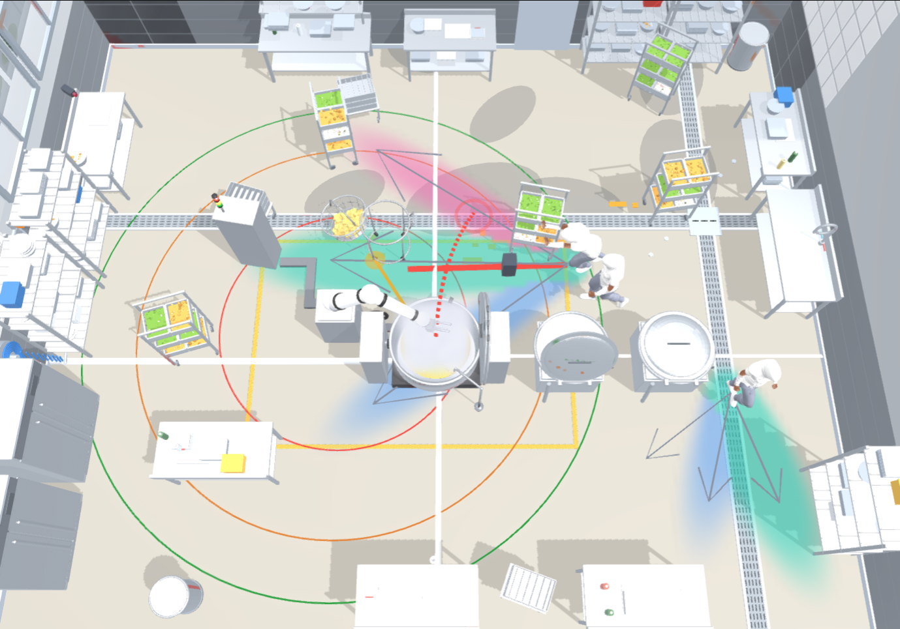

One overhead frame from our simulator, robot as ego — each detected worker carries a fan of likely futures, an uncertainty cloud, and a dashed path the robot plans against.

Every worker gets more than a single guessed line. The colored fan is the set of paths a worker might plausibly take next; the soft blob around each one is how uncertain that guess is (wider = less sure, the σ spread); the red dashes are the path that is about to cross into the robot's stop ring. The robot (ego, at the kettle) predicts all three workers at once over a 1.6 s horizon and plans against the whole set — not just the nearest person. Rings: red = stop, orange = slow, green = aware. Modeling each agent's futures this way is after Trajectron++ (Salzmann et al., 2020).